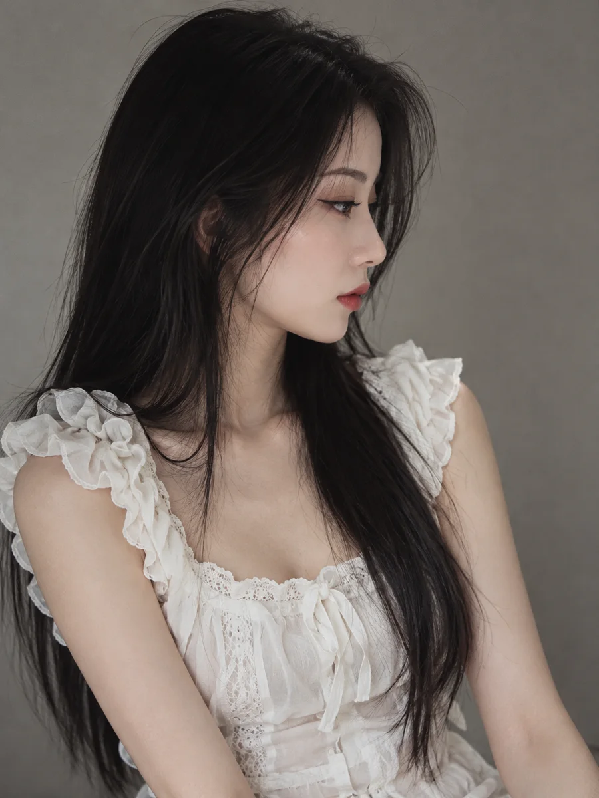
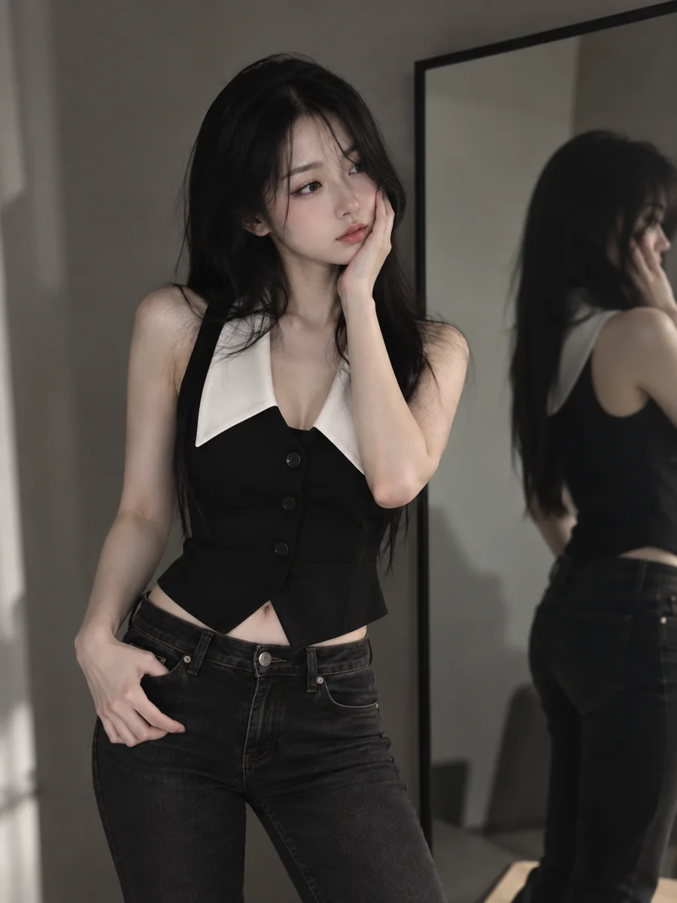

THE OTHER SIDE OF ME
Damn right.
Your kind of beautiful.
Real outfits. Real moods. A personal fashion diary for the days you feel quiet — and the days you feel anything but ordinary.
A space for self-expression, where style feels like home. No rules to follow. Just a little curiosity.
Start a conversation